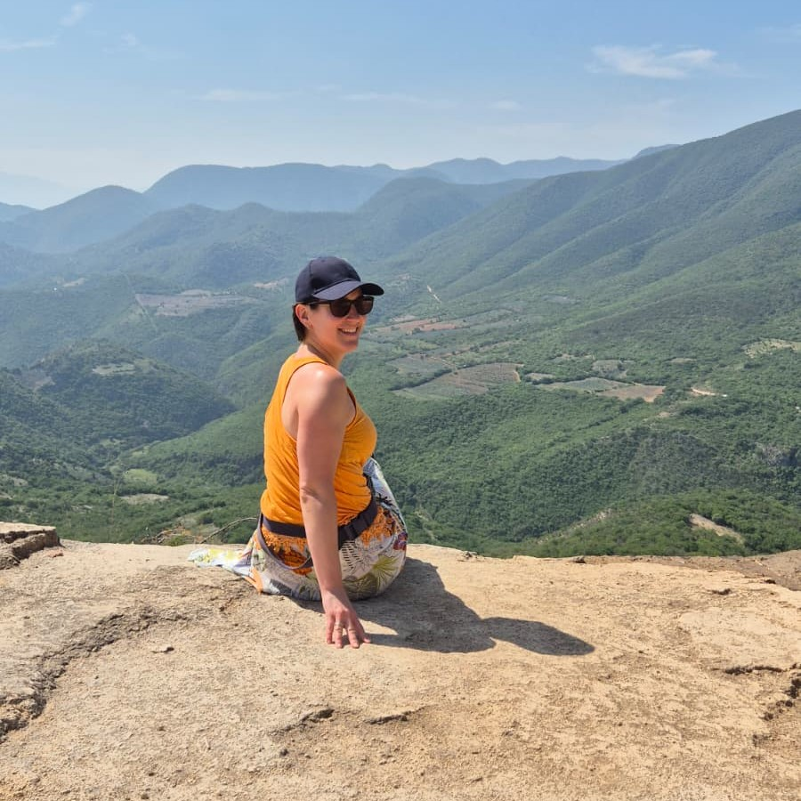

Kowal, M., Sorokowski, P., Gjoneska, B., Pisanski, K., Pfuhl, G., Aguilar, L., … Kozma, L., … & Zumárraga-Espinosa, M. (2025). Cross-cultural data on romantic love and mate preferences from 117,293 participants across 175 countries. Scientific Data, 12(1), 1103. https://doi.org/10.1038/s41597-025-05365-2
Mesko, N., Kowal, M., Lang, A., Kocsor, F., Bandi, S. A., Putz, A., Sorokowski, P., Frederick, D. A., Garcia, F. E., Aguilar, L. A., Studzinska, A., Tan, C. S., Gjoneska, B., Milfont, T. L., Topcu Bulut, M., Grigoryev, D., Aavik, T., Boussena, M., Mattiassi, A. D. A., … Kozma, L., … & Han, H. (2023). Exploring Attitudes Toward “Sugar Relationships” Across 87 Countries: A Global Perspective on Exchanges of Resources for Sex and Companionship. Archives of Sexual Behavior, 52(9). https://doi.org/10.1007/s10508-023-02724-1
Buchanan, E. M., Lewis, S. C., Paris, B., Forscher, P. S., Pavlacic, J. M., Beshears, J. E., Drexler, S. M., Gourdon-Kanhukamwe, A., Mallik, P. R., Silan, M. A. A., Miller, J. K., IJzerman, H., Moshontz, H., Beaudry, J. L., Suchow, J. W., Chartier, C. R., Coles, N. A., Sharifian, M., Todsen, A. L., … Kozma, L., & … Primbs, M. A. (2023). The Psychological Science Accelerator’s COVID-19 rapid-response dataset. Scientific Data, 10(1). https://doi.org/10.1038/s41597-022-01811-7
Kocsor, F., Ferencz, T., Kisander, Zs., Tizedes, G., Schaadt, B., Kertesz, R., Kozma, L., Vincze, O., Lang, A. (2022). The mental representation of occupational stereotypes is driven as much by their affective as by their semantic content. BMC Psychology, 10(1). https://doi.org/10.1186/s40359-022-00928-z
Dorison, C., Lerner, J. S., Heller, B. H., Rothman, A., Kawachi, I. I., Wang, K., Rees, V. W., Gill, B. P., Gibbs., N., Ebersole, C. R., Vally, Z., Tajchman, Z., Zsido, A. N., Zrimsek, M., Chen, Z., Ziano, I., Gialitaki, Z., Ceary, C. D., Jang, Y., Lin, Y., … Kozma, L., & … Coles, N. A. (2022). In COVID-19 health messaging, loss framing increases anxiety with little-to-no concomitant benefits: Experimental evidence from 84 countries. Affective Science, 3(3), 577-602. https://doi.org/10.1007/s42761-022-00128-3
Kowal, M., Sorokowski, P., Pisanski, K., Valentova, J. V., Varella, M. A. C., Frederick, D. A., Al-Shawaf, L., Garcia, F. E., Giammusso, I., Gjoneska, B., Kozma, L., Otterbring, T., Papadatou-Pastou, M., Pfuhl, G., Stockli, S., Studzinska, A., Toplu-Demirtas, E., Touloumakos, A. K., Bakos, B. E., … Zumarraga-Espinosa, M. (2022). Predictors of enhancing human physical attractiveness: Data from 93 countries. Evolution and Human Behavior, 43(6), 455-474. https://doi.org/10.1016/j.evolhumbehav.2022.08.003
Ferencz, T., Lang, A., Kocsor, F., Kozma, L., Babos, A., Gyuris, P. (2022). Sibling relationship quality and parental rearing style influence the development of Dark Triad traits. Current Psychology. https://doi.org/10.1007/s12144-022-03506-z
Legate, N., Ngyuen, T.-vy, Weinstein, N., Moller, A., Legault, L., Vally, Z., Tajchman, Z., Zsido, A. N., Zrimsek, M., Chen, Z., Ziano, I., Gialitaki, Z., Ceary, C. D., Jang, Y., Lin, Y., Kunisato, Y., Yamada, Y., Xiao, Q., Jiang, X., … Kozma, L., & … Primbs, M. A. (2022). A global experiment on motivating social distancing during the COVID-19 pandemic. Proceedings of the National Academy of Sciences, 119(22). https://doi.org/10.1073/pnas.2111091119
Wang, K., Goldenberg, A., Dorison, C. A., Miller, J. K., Uusberg, A., Lerner, J. S., Gross, J. J., Agesin, B. B., Bernardo, M., Campos, O., Eudave, L., Grzech, K., Ozery, D. H., Jackson, E. A., Garcia, E. O., Drexler, S. M., Jurkovic, A. P., Rana, K., Wilson, J. P., … Kozma, L., & … Moshontz, H. (2021). A multi-country test of Brief reappraisal interventions on emotions during the COVID-19 pandemic. Nature Human Behaviour, 5(8), 1089-1110. https://doi.org/10.1038/s41562-021-01173-x
Jones, B. C., DeBruine, L. M., Flake, J. K., Liuzza, M. T., Antfolk, J., Arinze, N. C., Ndukaihe, I. L., Bloxsom, N. G., Lewis, S. C., Foroni, F., Willis, M. L., Cubillas, C. P., Vadillo, M. A., Turiegano, E., Gilead, M., Simchon, A., Saribay, S. A., Owsley, N. C., Jang, C., … Kozma, L., & … Coles, N. A. (2021). To which world regions does the valence-dominance model of social perception apply? Nature Human Behaviour, 5(1), 159-169. https://doi.org/10.1038/s41562-020-01007-2
Gyuris, P., Kozma, L., Kisander, Z., Lang, A., Ferencz, T., & Kocsor, F. (2020). Sibling Relations in Patchwork Families: Co-residence Is More Influential Than Genetic Relatedness. Frontiers in Psychology, 11, 993. https://doi.org/10.3389/fpsyg.2020.00993
Kocsor, F., Kozma, L., Neria, A. L., Jones, D. N., & Bereczkei, T. (2019). Arbitrary signals of trustworthiness - social judgments may rely on facial expressions even with experimentally manipulated valence. Heliyon, 5(5), e01736. https://doi.org/10.1016/j.heliyon.2019.e01736
Shiramizu, V. K. M., Kozma, L., DeBruine, L. M., & Jones, B. C. (2019). Are dark triad cues really visible in faces? Personality and Individual Differences, 139, 214-216. https://doi.org/10.1016/j.paid.2018.11.011
Kozma, L., & Kocsor, F. (2017). Multiscale Analysis of Masculinity - an Exploratory Study. Human Ethology Bulletin, 322, 5-13. https://doi.org/10.22330/heb/322/005-013
Kozma, L., & Kocsor, F. (2016). Salter, Grammer, and Rokowski (2005). In T. K. Shackelford, & V. A. Weekes-Shackelford (Eds.), Encyclopedia of Evolutionary Psychological Science (pp. 1-3). Springer International Publishing. https://doi.org/10.1007/978-3-319-16999-6_1461-1